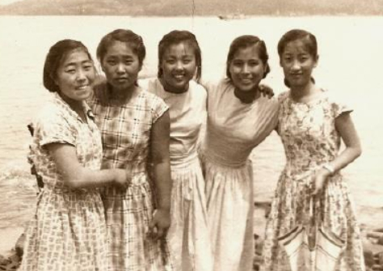

조문보 샘플
닫기명랑소녀 홍길순여사
1946.01.03 ~ 2021.6.19
사랑과 정성으로 저희들 키워주시고 마지막 순간까지 인생의 진리를 가르쳐 주셔서 감사합니다.
말씀도 못하시고, 수저도 못 드시고, 움직이지도 못하시지만 세상 그 누구보다 큰 일을 행하신 어머님.
아버님을 변화시키고 자녀와 손주들에게 어떻게 살며 서로 사랑하여야 하는지 가르쳐주셨습니다.
꿈 많고 활달한 명랑소녀
초등 시절 학예회 발표시간
노래와 춤 연극 발표 때 마다 활약, 샘도 많고 재능도 많으셨던 분
어머님은 초등학생 시절 학예회 발표 시간에 3 가지 이상의 역할에 뽑히지 않으면 샘을 냈다고 합니다.
샘도 많고 그 만큼 재능도 많아서 노래와 춤 연극 발표 때 마다 명랑소녀 강명희 여사는 활약을 하셨죠.

북두칠성 클럽
최영섭선생이 지도하신 합창단 단원으로 활동하며 친구들과 즐거운 학창시절
고등학생 시절 그 당시 ‘그리운 금강산’을 작곡하신 최영섭선생이 지도하신 합창단 단원으로 활동하시며 친구들과 즐거운 학창시절을 보내셨다고 합니다.
그 때 7명의 친한 친구들끼리 만든 북두칠성 클럽은 그 후 어머님의 인생길 구비 마다 함께 우정을 나누며 힘이 되어 주셨습니다.

가난한 실향민 고학생 아버지와 혼인
어머님이 고등학교를 졸업하시고 서울 수도계량국에 다니시던 중, 이웃집에서 하숙 하시던 가난한 실향민 고학생 아버지를 만나 연애를 하시고 1962년 결혼을 하십니다.
그 당시 아버지는 고향인 개성에서 피난 나오신 4남매 중 막내로 힘들게 고학하시며 인천에서 대학을 마치셨는데요. 아버지의 성실 하심과 선한 인상에 끌려 아버지의 청혼에 승낙하셨다고 합니다
만능 재주꾼 어머니
붓글씨를 특히 잘 쓰셨는데, 자식들이 초등학교 때 교실 게시판에 어머님 께서 써주신 붓글씨가 있었습니다.
손주까지 기르시고 나서 이제 어머님 만의 시간이 주어졌을 때 제일 먼저 하신 일이 서예 교실에 등록하시고 매일 한글 한자 붓글씨를 쓰시고 난을 치셨습니다.
작은 이모 붓글씨 전시회에 큰 이모와 함께 축하하러 가셔서 찍으신 사진입니다.